The Rarest Animals on Earth: Species on the Brink of Extinction
Our planet is home to an incredible array of life forms, from the tiniest insects to the most majestic
mammals. Yet, many of these creatures teeter dangerously close to extinction. In this post, we spotlight
20 of the rarest and most critically endangered animals in the world, exploring their unique traits,
habitats, and the urgent conservation efforts fighting to keep them alive.
What Does “Critically Endangered” Actually Mean?
According to the IUCN Red List, "Critically Endangered" is the highest risk category assigned to wild
species, indicating that a species faces an extremely high chance of extinction in the immediate future.
These animals often suffer from rapid population declines, severely limited habitats, or other extreme
threats. The Red List ranks species in the following categories (from least to most threatened):
1. Northern White Rhino (2 Remaining)
Location: Kenya
Why It's Rare: The Northern White Rhino is on the brink of extinction with only two females
remaining, both of which are incapable of reproduction naturally. Extensive efforts, such as in vitro
fertilization (IVF), are being used in hopes of bringing this species back from the brink.
Threats: Poaching for rhino horn and habitat destruction due to human activities, including
agricultural expansion and human-wildlife conflict.
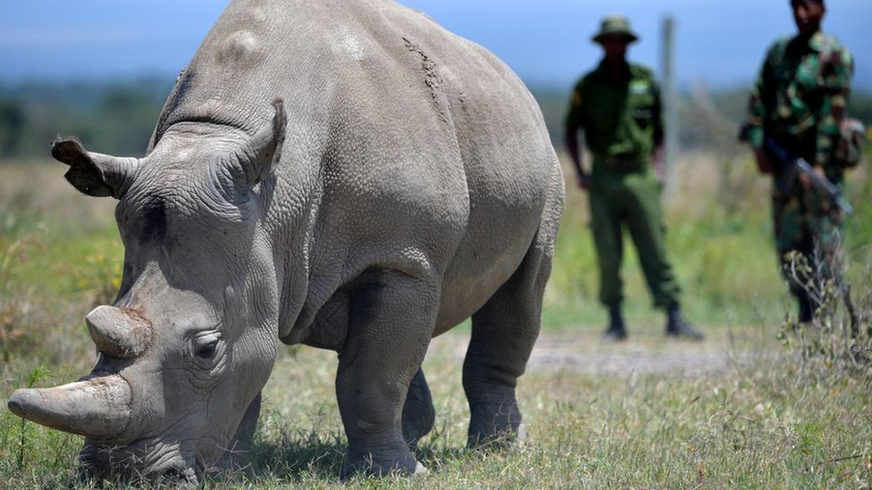
2. Vaquita 'less than 10 Remaining'
Location Gulf of California, Mexico
Why It's Rare: The Vaquita is a small, critically endangered marine mammal that is considered the
world’s most endangered marine species. Its population has been decimated by bycatch in illegal gillnets
used for catching another endangered species, the totoaba fish.
Threats: Bycatch in illegal fishing nets and habitat loss due to pollution.
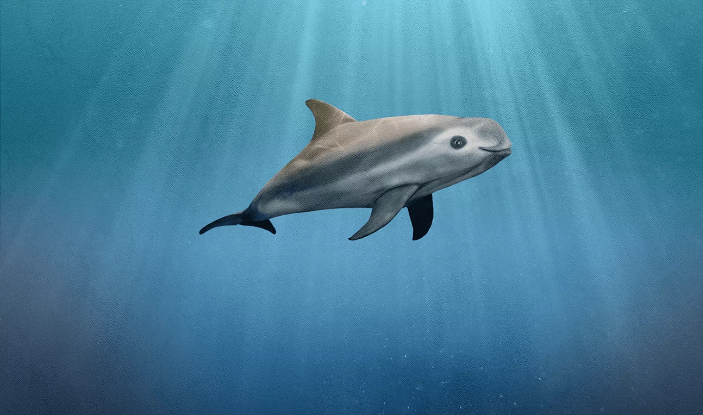
3. Hainan Gibbon 'less than 30 Remaining'
Location: Hainan Island, China
Why It's Rare: This species of gibbon is the rarest primate on Earth, with fewer than 30
individuals remaining, all in a small, isolated forest on Hainan Island. They are highly threatened by
deforestation and human encroachment.
Threats: Habitat loss due to logging, hunting, and human settlement expansion.
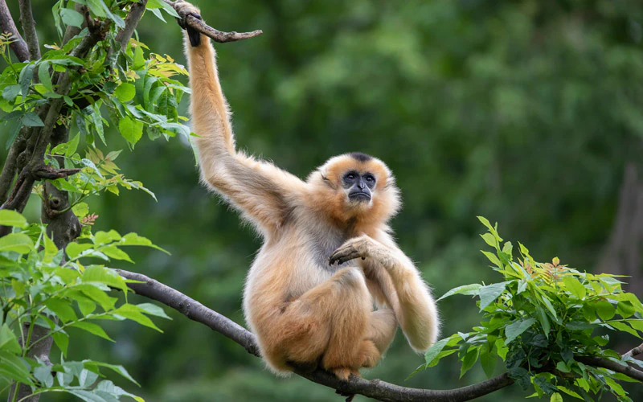
4. South China Tiger 'less than 40 Remaining'
Location: China (in captivity only)
Why It's Rare The South China tiger is likely extinct in the wild, with the last confirmed
sightings occurring decades ago. Today, they are found only in captivity, where conservationists attempt
to breed them.
Threats: Habitat destruction from human development and poaching.

5. Javan Rhino '~72 Remaining'
Location: Ujung Kulon National Park, Indonesia
Why It's Rare: This species is found only in one location—Ujung Kulon National Park in Java,
Indonesia. Natural disasters, disease, and poaching pose significant threats to its survival.
Threats: Natural disasters (like volcanic eruptions), poaching, and habitat loss.
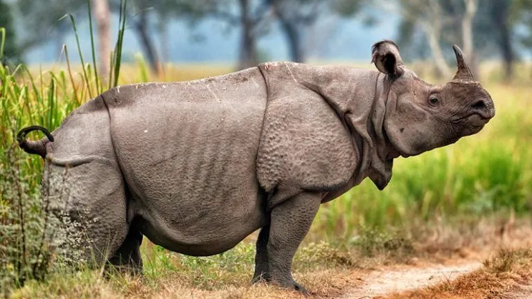
6. Sumatran Rhino 'less than 80 Remaining'
Location: Indonesia
Why It's Rare: One of the world's oldest and most primitive rhino species, the Sumatran rhino has
very low reproductive rates, making population recovery difficult. They are found only in isolated
forest areas of Indonesia.
Threats: Poaching for their horns and habitat loss from deforestation.
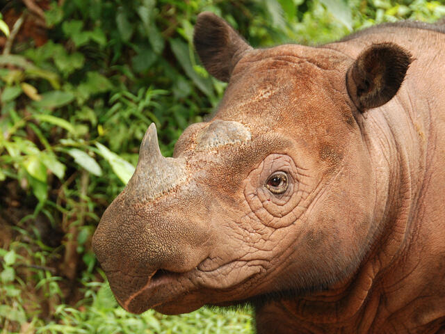
7. Saola 'less than 100 Remaining'
Location: Vietnam-Laos border
Why It's Rare: Known as the "Asian Unicorn," the Saola is a highly elusive species discovered in
1992. It is rarely seen, making it hard to study, but it is believed to be critically endangered due to
habitat destruction and poaching.
Threats: Snaring for bushmeat and habitat fragmentation.
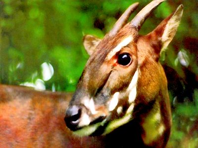
8. Amur Leopard 'less than 100 Remaining'
Location: Russia and China
Why It's Rare The Amur leopard is one of the rarest big cats in the world. Once widespread in its
native region, it now has a population of fewer than 100 individuals.
Threats: Habitat destruction, poaching for their fur, and loss of prey species.

9. Addax 'less than 100 Remaining'
Location: Sahara Desert
Why It's Rare: Adapted to survive in the harsh desert environment, the Addax antelope has seen
its population decimated by poaching and habitat loss, exacerbated by climate change and the expansion
of human settlements in the Sahara.
Threats: Overhunting and conflict zones in their desert habitat.
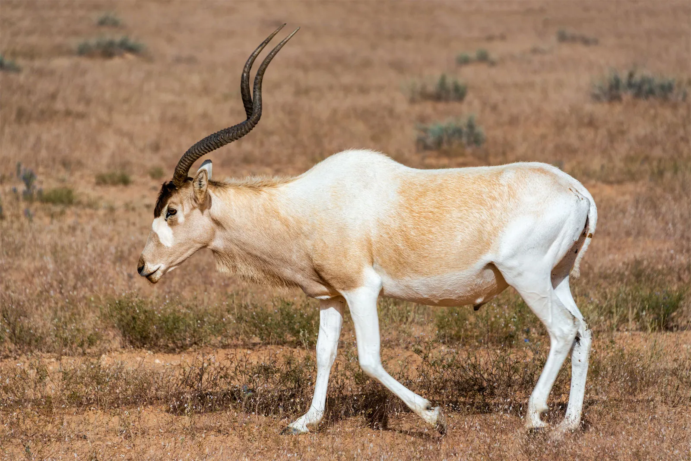
10. Kakapo 'less than 250 Remaining'
Location: New Zealand
Why It's Rare: The Kakapo is a flightless parrot that once thrived in New Zealand but was
decimated by introduced predators like rats and stoats. Conservationists are now working to protect the
remaining individuals on predator-free islands.
Threats: Predation by introduced animals and habitat loss.
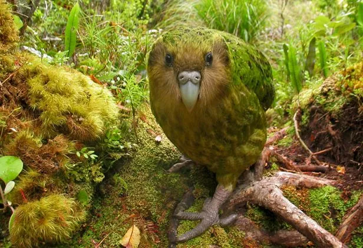
11. Cross River Gorilla '~300 Remaining'
Location: Nigeria-Cameroon border
Why It's Rare: The Cross River gorilla is one of the two remaining gorilla subspecies, found in a
small area along the Nigeria-Cameroon border. These gorillas are threatened by habitat loss and human
activities.
Threats: Poaching, habitat destruction from logging, and human-wildlife conflict.
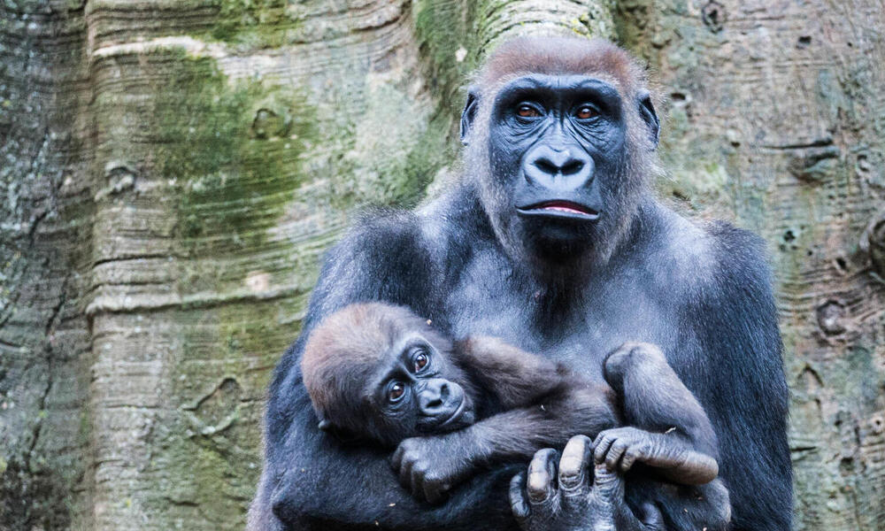
12. Red Wolf '~300 Remaining'
Location: Southeastern U.S.
Why It's Rare: The Red Wolf is a critically endangered species that once roamed the southeastern
U.S. It has been heavily impacted by hybridization with coyotes and habitat loss.
Threats: Hybridization with coyotes, roadkill, and habitat fragmentation.
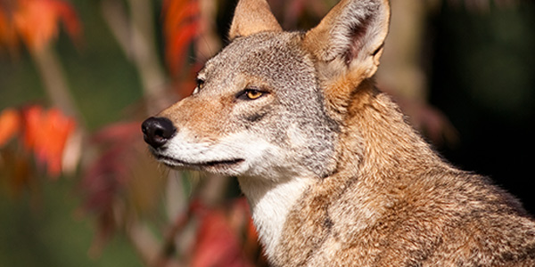
13. Ploughshare Tortoise 'less than 400 Remaining'
Location: Madagascar
Why It's Rare: This unique tortoise is prized in the illegal exotic pet trade, which has
contributed to its rapid decline. Conservation efforts focus on protection and breeding programs.
Threats: Wildlife trafficking and habitat destruction.
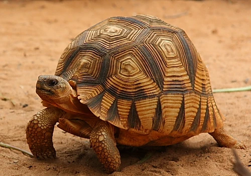
14. Sumatran Tiger 'less than 400 Remaining'
Location: Sumatra, Indonesia
Why It's Rare: The Sumatran tiger is the smallest of the tiger subspecies, and its population is
threatened by the rapid deforestation of its habitat and illegal hunting.
Threats: Deforestation, poaching, and human-wildlife conflict.
15. Bamboo Lemur '~500 Remaining'
Location: Madagascar
Why It's Rare: This lemur specializes in bamboo consumption and is highly vulnerable to habitat
destruction in Madagascar’s forests.
Threats: Deforestation and hunting for bushmeat.
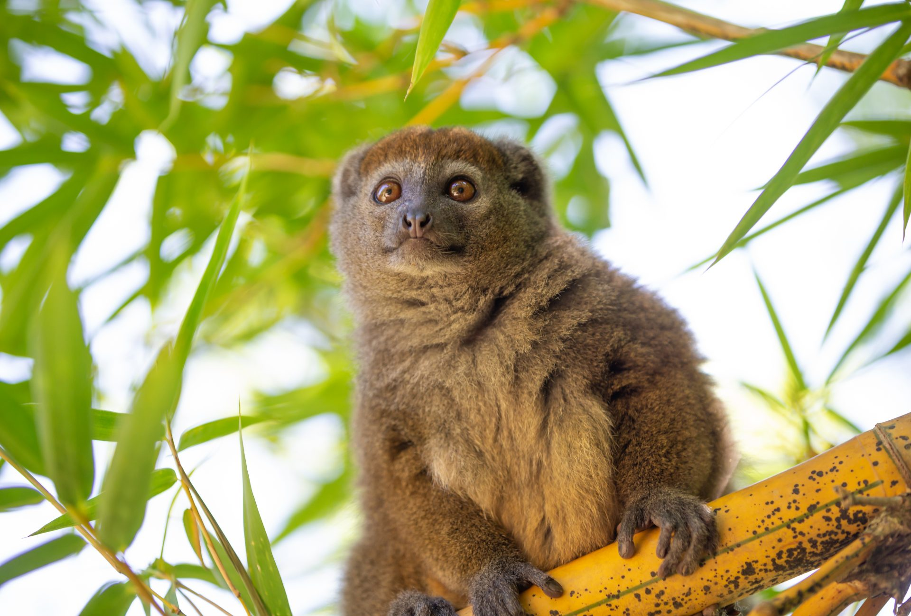
16. California Condor '~500 Remaining'
Location: U.S. West Coast
Why It's Rare: Once extinct in the wild, California condors were brought into captivity for
breeding and are now slowly being reintroduced into the wild.
Threats: Lead poisoning from ingesting bullet fragments and trash ingestion.
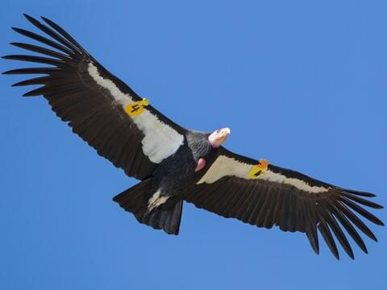
17. Tapanuli Orangutan 'less than 800 Remaining'
Location: North Sumatra
Why It's Rare: Recently discovered as a distinct species, the Tapanuli orangutan is critically
endangered by deforestation, particularly for palm oil plantations and mining.
Threats: Habitat destruction due to mining and deforestation, and human-wildlife conflict.

18. Gharial 'less than 900 Remaining'
Location: Indian subcontinent
Why It's Rare: This fish-eating crocodile has a distinctive long, narrow snout. Once widespread
across the Indian subcontinent, the Gharial is now critically endangered due to habitat loss and river
fragmentation.
Threats: Habitat fragmentation and loss of prey.

19. Spoon-billed Sandpiper 'less than 1,000 Remaining'
Location: Russia to Southeast Asia
Why It's Rare: This small wader bird has a distinctive spoon-shaped bill and is endangered due to
its long migration routes and habitat loss along the coasts of Russia and Southeast Asia.
Threats: Loss of wetlands, habitat destruction, and climate change.

20. Yangtze Finless Porpoise '~1,000 Remaining'
Location: Yangtze River, China
Why It's Rare: The Yangtze finless porpoise is the world’s only freshwater porpoise. It is
critically endangered due to pollution, boat traffic, and the alteration of its river habitat.
Threats: Pollution, boat traffic, and habitat loss.
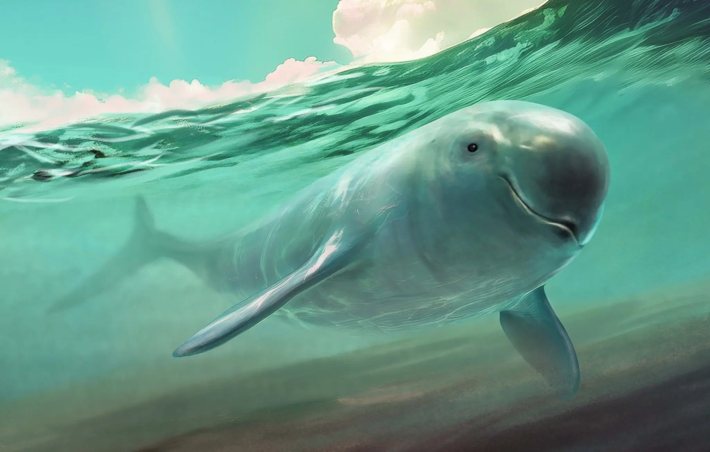
These species are not just rarities they are vital to their ecosystems. Their extinction could trigger significant changes in their habitats, affecting countless other species. Therefore, the work of conservationists is critical to their survival. Every action we take to protect biodiversity can contribute to the preservation of these magnificent creatures.